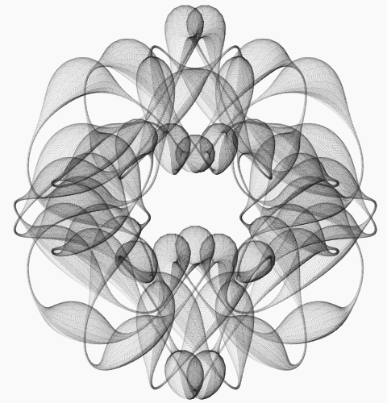

class: center, middle # Drawing with Turtle ##(and trigonometry ) .author[ CORE-UA 109.01, Joanna Klukowska <br> This presentation was inspired by an article from Scientific American: <br> [_Making Mathematical Art_](https://blogs.scientificamerican.com/guest-blog/making-mathematical-art/) by Hamid Naderi Yeganeh on March 16, 2017. ] --- # Is this art? .center[ <img src="https://blogs.scientificamerican.com/sciam/assets/Image/articles/10000_Circles.jpg " width=70% alt="10,000 Circles. Credit: Hamid Naderi Yeganeh"> ] --- # Is this art? .left-column2[ .center[ <img src="https://blogs.scientificamerican.com/sciam/assets/Image/articles/10000_Circles.jpg " width=99% alt="10,000 Circles. Credit: Hamid Naderi Yeganeh"> ] ] .right-column2[ would you change your answer if: - ... it turned out that it is generated by a computer program? - ... you could write a program that does exactly the same drawing? - ... it was based on a mathematical function? ] -- In this blog post in Scientific American [_Making Mathematical Art_](https://blogs.scientificamerican.com/guest-blog/making-mathematical-art/) Hamid Naderi Yeganeh introduces us to the art of fractals and showcases several of his own works. More of his artwork can be found at [Mathematical Art by Hamid Naderi Yeganeh](https://mathematics.culturalspot.org/home) --- class: center, middle .section[ # Turtle graphics basics ] --- # first Turtle graphics program ```python # Step 1: Make all the "turtle" commands available to us. import turtle # Step 2: Create a new turtle. We'll call it "bob" bob = turtle.Turtle() # Step 3: Move in the direction Bob's facing for 50 pixels bob.forward(50) # Step 4: We're done! turtle.done() ``` --- # drawing squares and pentagons <iframe src="https://trinket.io/embed/python/e567c7e115" width="100%" height="356" frameborder="0" marginwidth="0" marginheight="0" allowfullscreen></iframe> -- * what changes should we make to draw a * triangle * pentagon * hexagon * can we write a program with a single variable that controls the number of sides (do that changing that one value changes what the program does)? --- # drawing circles <iframe src="https://trinket.io/embed/python/934c4ad378" width="100%" height="500" frameborder="0" marginwidth="0" marginheight="0" allowfullscreen></iframe> https://trinket.io/embed/python/934c4ad378 --- # documentation ###(i.e., where to learn more) - To learn from the documentation for the turtle package you can use the official Python3 documentation: https://docs.python.org/3.2/library/turtle.html - There are some good examples (like the one below) and detailed descriptions of all of the functions ```python # https://trinket.io/python/ce301e7e94 import turtle bob = turtle.Turtle(); bob.speed(0) bob.color('red', 'yellow') bob.begin_fill() for i in range(37): bob.forward(200) bob.left(170) bob.end_fill() bob.done() ``` --- ### drawing plots of sin() and cos() functions ```python # https://trinket.io/python/d4c8bc7dcf import math import turtle # resize the screen for drawing of trigonometric funtions wn = turtle.Screen() wn.setworldcoordinates(-1,-2,8,2) #setup the turtle to draw the sin() function fred = turtle.Turtle() fred.pencolor('green') fred.shape("turtle") fred.penup() #setup the turtle to draw the cos() function jack = turtle.Turtle() jack.pencolor('blue') jack.shape("turtle") jack.penup() #draw the two functions for x in range(360): x = math.radians(x) y1 = math.sin(x) y2 = math.cos(x) fred.goto(x, y1) jack.goto(x, y2) fred.pendown() jack.pendown() ``` --- # plot of sin() with circles <iframe src="https://trinket.io/embed/python/110cf6fbd0" width="100%" height="500" frameborder="0" marginwidth="0" marginheight="0" allowfullscreen></iframe> https://trinket.io/embed/python/110cf6fbd0 --- # plot of sin() with circles - take 2 <iframe src="https://trinket.io/embed/python/be2dae1f44" width="100%" height="500" frameborder="0" marginwidth="0" marginheight="0" allowfullscreen></iframe> https://trinket.io/embed/python/be2dae1f44 --- # trig plot with circles <iframe src="https://trinket.io/embed/python/a8818e03cc" width="100%" height="500" frameborder="0" marginwidth="0" marginheight="0" allowfullscreen></iframe> https://trinket.io/embed/python/a8818e03cc --- class: center, middle .section[ # Hamid Naderi Yeganeh artwork ] --- ```python # https://trinket.io/python/30ecf5204f # This program recreates the fractal art produced # by Hamid Naderi Yeganeh. import turtle import math artist = turtle.Turtle() artist.speed(0) artist.pensize(0.01) artist.hideturtle() count = 10000 scale = 100 for k in range(count) : x = math.cos(14 * math.pi * k / count) * (1 - 3/4 * (math.cos(20*math.pi*k/count)**2)) y = math.sin(14 * math.pi * k / count) * (1 - 3/4 * (math.cos(24*math.pi*k/count)**2)) r = 1/200 + 1/10 * (math.sin(54*math.pi*k/count)**6) print(k) artist.penup() artist.setx(x*scale) artist.sety(y*scale) artist.pendown() artist.circle(r*scale) ``` --- __drawing produced by the program on the previous slide__ .center[  ] --- ```python # https://trinket.io/python/a1a282b662 # This program recreates the fractal art produced # by Hamid Naderi Yeganeh. import turtle import math artist = turtle.Turtle() artist.speed(0) artist.pensize(.1) artist.hideturtle() count = 6000 scale = 100 for i in range(count) : x1 = math.sin(28*math.pi*i/count) y1 = math.cos(14*math.pi*i/count) x2 = math.sin(48*math.pi*i/count) y2 = math.cos(24*math.pi*i/count) print(i) artist.penup() artist.goto(x1*scale, y1*scale) artist.pendown() artist.goto(x2*scale, y2*scale) ``` --- __drawing produced by the program on the previous slide__ .center[ ] --- # programming challenge - pick a drawing from the art collection at [Mathematical Art by Hamid Naderi Yeganeh](https://mathematics.culturalspot.org/home) and write a python program that recreates it ---